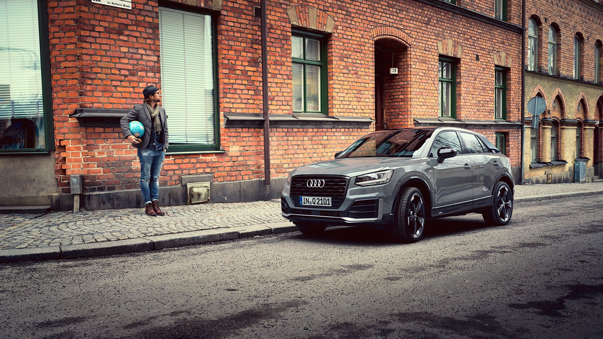

The Audi Q2 takes the stage – an urban type with corners and edges. Whether for adventures off the beaten track or everyday life in the big city – the Audi Q2 is an all-rounder. Its progressive design and modern connectivity features make it ready for a new kind of mobility. The interior offers expressive colours for seat covers and decorative trims, leaving plenty of room for individual design.
Fuel consumption combined *: 6.7-4.5 l/100kmCO₂-emissions combined *: 153-117 g/km
4.19 meters long. 1205 kg weight. 2.60 meter wheelbase. A superior Cd value of 0.30. Those are the base figures. Even more spectacular is what you see: an SUV which at first glance already shows its muscles. With broad shoulders and angular styling, it is brimming with energy and confidence. Experience the Audi Q2.
Driving dynamics and efficiency are not mutually exclusive for the Audi Q2. The new SUV comes with six engines – three petrol and three diesel. Depending on the engine there is a six gear manual gearbox or an S tronic dual-clutch with seven gears. And four of the units are available with permanent four wheel drive.
At the front sits the high-positioned, single-frame grille with an octagon-design symbol. Especially striking: the gently-sloping coupé-like roof flows into a C-pillar with a colour-contrasting blade. The Audi Q2 stands self-confidently on the road – the low roof and the high window line are reminiscent of a coupé and make the lifestyle sports car look impressive.
